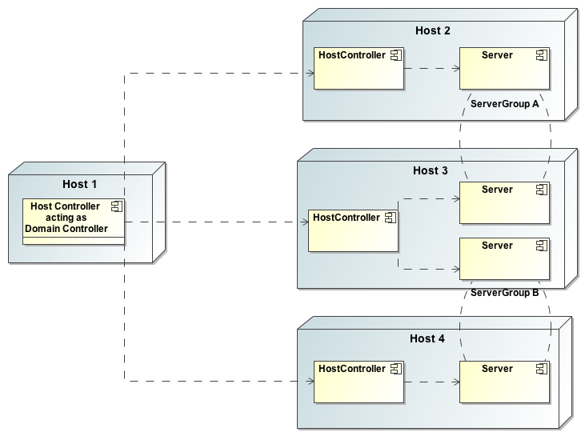

WildFly 8 can be booted in two different modes. A managed domain allows you to run and manage a multi-server topology. Alternatively, you can run a standalone server instance.
Standalone Server
For many use cases, the centralized management capability available via a managed domain is not necessary. For these use cases, a WildFly 8 instance can be run as a "standalone server". A standalone server instance is an independent process, much like an JBoss Application Server 3, 4, 5, or 6 instance is. Standalone instances can be launched via the standalone.sh or standalone.bat launch scripts.
If more than one standalone instance is launched and multi-server management is desired, it is the user's responsibility to coordinate management across the servers. For example, to deploy an application across all of the standalone servers, the user would need to individually deploy the application on each server.
It is perfectly possible to launch multiple standalone server instances and have them form an HA cluster, just like it was possible with JBoss Application Server 3, 4, 5 and 6.
Managed Domain
One of the primary new features of WildFly 8 is the ability to manage multiple WildFly instances from a single control point. A collection of such servers is referred to as the members of a "domain" with a single Domain Controller process acting as the central management control point. All of the WildFly 8 instances in the domain share a common management policy, with the Domain Controller acting to ensure that each server is configured according to that policy. Domains can span multiple physical (or virtual) machines, with all WildFly 8 instances on a given host under the control of a special Host Controller process. One Host Controller instance is configured to act as the central Domain Controller. The Host Controller on each host interacts with the Domain Controller to control the lifecycle of the application server instances running on its host and to assist the Domain Controller in managing them.
When you launch a WildFly 8 managed domain on a host (via the domain.sh or domain.bat launch scripts) your intent is to launch a Host Controller and usually at least one WildFly instance. On one of the hosts the Host Controller should be configured to act as the Domain Controller. See [WLFY8:Domain Setup] for details.
The following is an example managed domain topology:

Host
Each "Host" box in the above diagram represents a physical or virtual host. A physical host can contain zero, one or more server instances.
Host Controller
When the domain.sh or domain.bat script is run on a host, a process known as a Host Controller is launched. The Host Controller is solely concerned with server management; it does not itself handle application server workloads. The Host Controller is responsible for starting and stopping the individual application server processes that run on its host, and interacts with the Domain Controller to help manage them.
Each Host Controller by default reads its configuration from the domain/configuration/host.xml file located in the unzipped WildFly 8 installation on its host's filesystem. The host.xml file contains configuration information that is specific to the particular host. Primarily:
-
the listing of the names of the actual WildFly 8 instances that are meant to run off of this installation.
-
configuration of how the Host Controller is to contact the Domain Controller to register itself and access the domain configuration. This may either be configuration of how to find and contact a remote Domain Controller, or a configuration telling the Host Controller to itself act as the Domain Controller.
-
configuration of items that are specific to the local physical installation. For example, named interface definitions declared in domain.xml (see below) can be mapped to an actual machine-specific IP address in host.xml. Abstract path names in domain.xml can be mapped to actual filesystem paths in host.xml.
Domain Controller
One Host Controller instance is configured to act as the central management point for the entire domain, i.e. to be the Domain Controller. The primary responsibility of the Domain Controller is to maintain the domain's central management policy, to ensure all Host Controllers are aware of its current contents, and to assist the Host Controllers in ensuring any running application server instances are configured in accordance with this policy. This central management policy is stored by default in the domain/configuration/domain.xml file in the unzipped WildFly 8 installation on Domain Controller's host's filesystem.
A domain.xml file must be located in the domain/configuration directory of an installation that's meant to run the Domain Controller. It does not need to be present in installations that are not meant to run a Domain Controller; i.e. those whose Host Controller is configured to contact a remote Domain Controller. The presence of a domain.xml file on such a server does no harm.
The domain.xml file includes, among other things, the configuration of the various "profiles" that WildFly 8 instances in the domain can be configured to run. A profile configuration includes the detailed configuration of the various subsystems that comprise that profile (e.g. an embedded JBoss Web instance is a subsystem; a JBoss TS transaction manager is a subsystem, etc). The domain configuration also includes the definition of groups of sockets that those subsystems may open. The domain configuration also includes the definition of "server groups":
Server Group
A server group is set of server instances that will be managed and configured as one. In a managed domain each application server instance is a member of a server group. (Even if the group only has a single server, the server is still a member of a group.) It is the responsibility of the Domain Controller and the Host Controllers to ensure that all servers in a server group have a consistent configuration. They should all be configured with the same profile and they should have the same deployment content deployed.
The domain can have multiple server groups. The above diagram shows two server groups, "ServerGroupA" and "ServerGroupB". Different server groups can be configured with different profiles and deployments; for example in a domain with different tiers of servers providing different services. Different server groups can also run the same profile and have the same deployments; for example to support rolling application upgrade scenarios where a complete service outage is avoided by first upgrading the application on one server group and then upgrading a second server group.
An example server group definition is as follows:
<server-group name="main-server-group" profile="default">
<socket-binding-group ref="standard-sockets"/>
<deployments>
<deployment name="foo.war_v1" runtime-name="foo.war" />
<deployment name="bar.ear" runtime-name="bar.ear" />
</deployments>
</server-group>
A server-group configuration includes the following required attributes:
In addition, the following optional elements are available:
-
socket-binding-group -- specifies the name of the default socket binding group to use on servers in the group. Can be overridden on a per-server basis in host.xml. If not provided in the server-group element, it must be provided for each server in host.xml.
-
deployments -- the deployment content that should be deployed on the servers in the group.
-
system-properties -- system properties that should be set on all servers in the group
-
jvm -- default jvm settings for all servers in the group. The Host Controller will merge these settings with any provided in host.xml to derive the settings to use to launch the server's JVM. See JVM settings for further details.
Server
Each "Server" in the above diagram represents an actual application server instance. The server runs in a separate JVM process from the Host Controller. The Host Controller is responsible for launching that process. (In a managed domain the end user cannot directly launch a server process from the command line.)
The Host Controller synthesizes the server's configuration by combining elements from the domain wide configuration (from
domain.xml
) and the host-specific configuration (from
host.xml
).
Deciding between running standalone servers or a managed domain
Which use cases are appropriate for managed domain and which are appropriate for standalone servers? A managed domain is all about coordinated multi-server management -- with it WildFly 8 provides a central point through which users can manage multiple servers, with rich capabilities to keep those servers' configurations consistent and the ability to roll out configuration changes (including deployments) to the servers in a coordinated fashion.
It's important to understand that the choice between a managed domain and standalone servers is all about how your servers are managed, not what capabilities they have to service end user requests. This distinction is particularly important when it comes to high availability clusters. It's important to understand that HA functionality is orthogonal to running standalone servers or a managed domain. That is, a group of standalone servers can be configured to form an HA cluster. The domain and standalone modes determine how the servers are managed, not what capabilities they provide.
So, given all that:
-
A single server installation gains nothing from running in a managed domain, so running a standalone server is a better choice.
-
For multi-server production environments, the choice of running a managed domain versus standalone servers comes down to whether the user wants to use the centralized management capabilities a managed domain provides. Some enterprises have developed their own sophisticated multi-server management capabilities and are comfortable coordinating changes across a number of independent WildFly 8 instances. For these enterprises, a multi-server architecture comprised of individual standalone servers is a good option.
-
Running a standalone server is better suited for most development scenarios. Any individual server configuration that can be achieved in a managed domain can also be achieved in a standalone server, so even if the application being developed will eventually run in production on a managed domain installation, much (probably most) development can be done using a standalone server.
-
Running a managed domain mode can be helpful in some advanced development scenarios; i.e. those involving interaction between multiple WildFly 8 instances. Developers may find that setting up various servers as members of a domain is an efficient way to launch a multi-server cluster.